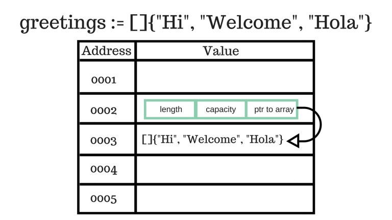

Go
Table of Contents
1 Type
| Value types | boolean, number, string, struct |
|---|---|
| Reference types | slice, map, channel, pointer, function |
1.1 Boolean
true false
1.2 Number
uint8 // 0 to 255 uint16 // 0 to 65535 uint32 // 0 to 4294967295 uint64 // 0 to 18446744073709551615 int8 // -128 to 127 int16 // -32768 to 32767 int32 // -2147483648 to 2147483647 int64 // -9223372036854775808 to 9223372036854775807 byte // alias for uint8 rune // alias for int32 float32 // IEEE-754 32-bit floating-point number float64 // IEEE-754 64-bit floating-point number complex64 // complex number with float32 real and imaginary parts complex128 // complex number with float64 real and imaginary parts
100 // 普通表示法 1e9 // 科学计数法
1.3 String
"string" // Interpreted string literal `string` // Raw string literal 's' // Character literal str := "foo" + "bar" // Concatenation // Equality str1 := "apple" str2 := "a" + "pple" compare1 := (str1 == str2) // true compare2 := (&str1 == &str2) // false // Compare str3 := "banana" compare3 := (str1 < str3) // true
1.4 Array
var a [2]string a := make([]string, 2) a[0] = "foo" b := [3]int{1, 2, 3} // 声明加初始化 c := []int{4, 5, 6} // 初始化可省略长度 d := [][]string{ // 多维数组初始化 []string{"a", "b"}, []string{"c", "d"} }
1.4.1 数组分片
- 数组是原始数据类型，创建之后大小无法改变，很少被直接使用。
- 分片是对数组的引用，分片的大小可以变化。

当创建一个数组时，Go 其实同时创建了两个数据结构：底层的数组，和引用此数组的分片，分片中包含：指向数组的指针、长度、容量。

由于函数参数为传值，因此当分片作为参数时，传入的其实是对底层数组的引用，修改此分片的字段值将修改底层的数组元素值。

func Foo(a []int) { a[0] += 10 } a := []int{1, 2, 3} Foo(a) // a = {11, 2, 3}
1.4.2 手动分片
除了创建数组时自动生成的分片，也可以手动创建数组的分片。
a := []int{10, 11, 12, 13} // from 包含，to 不包含 b := a[1:3] // b = {11, 12} // from 默认为 0，to 默认为数组长度 b := a[:] // b = {10, 11, 12, 13} b, c := a[:2], a[2:] // b = {10, 11} // c = {12, 13} // 分片是对原数组的引用 a[0] = 14 // b = {14, 11} // c = {12, 13} b[1] = 15 // a = {14, 15, 12, 13}
1.4.3 长度和容量
| Length | 分片的元素数 |
|---|---|
| Capacity | 分片引用的数组中，从此分片的第一个元素，到数组的最后一个元素的元素数 |
a := []int{1, 3, 5, 7} // len = 4, cap = 4 a = a[:0] // len = 0, cap = 4 a = a[:2] // len = 2, cap = 4 a = a[2:] // len = 2, cap = 2 b = []int // len = 0, cap = 0 // 空分片长度和容量都为 0
1.5 Map
map[<ktype>]<vtype>
var a map[string]int a := make(map[string]int) var a = map[string]int{ "foo": 1, "bar": 2, // 每行必须以 , 结尾 } a := map[string]int{ "foo": 1, "bar": 2, } a["foo"] = 1 v = a["foo"] v, ok = a["bar"] // 读取并测试值是否存在，v = nil，ok = false _, ok = a["foo"] // 只测试值是否存在 delete(a, "foo")
1.6 Pointer
指针无法进行数学运算，或与数组交替使用（C 语言风格）。
Go 记录指针和对象的引用关系，对象的内存空间在所有引用其的指针被销毁前不会被回收（deallocate）。
var a *string b := "foo" a := &b *a = "bar" type Foo struct { x, y int32 } c := Foo{1, 2} d := &c d.x = 3 // 结构体指针可以省略 *
1.7 Channel
频道（channel）用于线程间通信，多个线程可以通过一个频道收发消息。
频道的类型即可通过此频道交换的数据的类型，如 int string 。
ch := make(chan string) ch <- "foo" // 向频道发送消息 v <- ch // 等待频道接收消息，并赋值给变量 fmt.Println(<- ch) // 等待频道接收消息，并打印输出 // 打印频道中所有消息，两种方式等价 for s := range ch { fmt.Println(s) } for { fmt.Println(<- ch) }
等待频道接收数据 <- ch 为阻塞过程，频道接收到数据时解除阻塞。
2 Type Usage
2.1 Custom Type
type <name> Type // 定义后，<name> 将完全等价于指定的 Type type color string foo := color("red") type list []string bar := list{"a", "b"}
2.2 Assertion
<name>.(Type)
switch foo.(type) { case int: ... case string: ... default: fmt.Printf("Unknown type: %T\n", t) }
var i interface{} = "hello" fmt.Println(i.(string)) // OK: hello fmt.Println(i.(float64)) // Panic: 类型不匹配 s, ok := i.(string) // s = hello, ok = true f, ok := i.(float64) // f = 0, ok = false
2.3 Casting
Type(<name>)
foo := uint8(99) bar := string("test")
foo := "test" bar := []byte(foo)
var i int = 1 f := float64(i)
3 Struct
3.1 Syntax
type Foo struct { x, y int32 // Lowercase initial, invisible outside of pacakge Z string // Uppercase initial, visible outside of package } a := Foo{1, 2} // Field names optional, will assign in same order a := Foo{x: 1, y: 2} a := Foo{ x: 1, y: 2, // 写作多行时，每行必须以 , 结尾 } b := Foo{x: 1} // 未指定的成员默认为零值，b = {x: 1, y: 0} b.y = 2 c := [] struct { i int b bool } { {1, true}, {2, false}, } d := map[string]Foo{ "foo": Foo{1, 2}, "bar": Foo{3, 4}, }
3.2 Struct Extension
type person struct { name string } type account struct { person // Name can be omitted is same as type balance int32 } func (p person) output() { fmt.Println("Person name is", p.name) } account1 := account{ person{ "Foo", }, 100, } fmt.Println(account1.name) // Foo (falls back to account1.person.name) fmt.Println(account1.person.name) // Foo account1.output() // Person name is Foo (falls back to account1.person.output()) account1.person.output() // Person name is Foo
type person struct { name string } type account struct { person name string // Takes precedence over person.name balance int32 } func (p person) output() { fmt.Println("Person name is", p.name) } func (a account) output() { // Take precedence over person.output() fmt.Println("Account name is", a.name) } account1 := account{ person{ "Foo", }, "Bar", 100, } fmt.Println(account1.name) // Bar fmt.Println(account1.person.name) // Foo account1.output() // Account name is Bar account1.person.output() // Person name is Foo
4 Interface
type <name> interface { <method>() <type> }
空接口 interface{} 可存放任何值，因此可用于定义可接受任何基础类型的函数：
var foo interface{} = 10 var bar interface{} = "string" func foo(i interface{}) { fmt.Printf("Type is %T\n", i) } foo(1) // Type is int foo("string") // Type is string foo(false) // Type is bool
4.1 Interface Implementation
任何实现了接口中定义的方法的类型，即隐式实现了该接口，这种方式称为 duck typing。
type Obj interface { GetType() string } func PrintType(o Obj) { // 接口只能作为函数参数，不能作为方法 receiver fmt.Println(o.GetType) } type Foo struct {} type Bar struct {} func (f Foo) GetType() string { return "Foo" } // Foo 类型实现了 Obj 接口 func (b Bar) GetType() string { return "Bar" } // Bar 类型实现了 Obj 接口 func main() { PrintType(Foo{}) PrintType(Bar{}) }
5 Variable
5.1 语法
// 声明未初始化的变量为零值 var foo int // foo = 0 var foo, bar int // 声明加初始化 var foo int = 1 var foo, bar int = 1, 2 // 初始化可以省略类型 var foo = 1 var foo, bar = 1, "test" var ( foo = 1 bar = "test" ) // 声明加初始化简写，只能在函数体内使用 foo := 1 foo, bar := 1, "test" // 初始值为数字时，类型由值的精确度决定 a := 1 // int b := 3.142 // float64 c := 0.867 + 0.5i // complex128
6 Constant
常量可以是布尔、数字、字符串类型。
const a string = "constant" func main() { const b = 500000000 const c = 3e20 / d // 可以引用其他常量 }
7 Expression
7.1 defer
defer <stat>
func foo() { defer fmt.Println("deferred line") // 延迟到函数返回前执行 fmt.Println("normal line") return } // normal line // deferred line func foo() { defer fmt.Println("1 + 1 =", bar(1)) // 延迟语句的参数会立即求值 fmt.Println("running foo") } func bar(x int) int { fmt.Println("running bar") return x + 1 } // running bar // running foo // 1 + 1 = 2 func foo() { for i := 0; i < 10; i++ { defer fmt.Println("i =", i) // 延迟语句放入堆栈，后放入先执行 } } // i = 9 // i = 8 // ...
7.2 for
for i := 0; i < 10; i++ { if i % 2 == 0 { continue } } i := 0 for i < 10 { // 只有条件，相当于 while i += 1 } for { // 无限循环 break }
7.3 go
Goroutine 即异步执行的函数调用。
go <func>()
func foo(s string) { fmt.Println(s) } foo("line 1") // 普通函数调用 go foo("line 2") // Goroutine 函数调用 go func(s string) { // Goroutine 匿名函数调用 fmt.Println(s) }("line 3")
7.4 if
if i < 10 { } else if i < 100 { } else { } if i := 10; i < 10 { // 进行判断之前可执行语句 i += 1 // 声明的变量只在 if 语句范围内有效 } else { }
7.5 range
for k, v := range "foo" { fmt.Printf("%d %c\n", k, v) } // 0 f // 1 o // 2 o
pow := []int{1, 2, 4, 8} for k, v := range pow { fmt.Printf("2^%d = %d\n", k, v) } // 2^0 = 1 // 2^1 = 2 // 2^2 = 4 // 2^3 = 8
m := map[int]string{10: "ten", 11: "eleven"} for k, v := range m { fmt.Printf("%d = %v\n", k, v) } // 10 = ten // 11 = eleven
7.6 switch
switch [<stat>;] <name> { case <value>: ... // 自动 break，除非有 fallthrough case <value>, <value>: // 并列多个值 ... default: ... } switch { // switch 没有表达式，只根据 case 表达式判断，可以实现复杂的 if/else case <stat>: ... case <stat>: ... default: ... }
8 Function
func (<receiver>) <name>(<params>) (<returns>) {}
8.1 参数
func foo(x int) {} func foo(x, y int) {}
Go 函数参数不支持默认值，需要用默认值替代空值时：
func foo (x int) { if x == 0 { x = 1 } }
8.1.1 Variadic Parameter
func foo(args ...int) int { sum := 0 for _, i := range args { sum += i } return sum } x := foo(1, 2, 3) // 6 y := foo([]int{1, 2, 3}...) // 6
func foo(args ...interface{}) { for _, arg := range args { fmt.Printf("type = %T\n", arg) } } foo(1, "test", true) // type = int // type = string // type = bool
8.2 返回值
func foo(bar int) int { return 0 } func foo(bar int) (int, int) { return 0, 1 } x, y = foo(1) // OK x = foo(1) // Error: multiple-value foo() in single-value context x, _ = foo(1) // OK func foo(x, y int) (sum, diff int) { // Named return values // Return values inited to empty values at start sum = x + y diff = x - y return // Return all named return values by default } a, b := foo(1, 5) // 6, -4
8.3 函数类型
自定义类型可以为函数，任何符合此签名的函数都可以认为属于此类型。
type fooFunc func(Type) Type func fooOne(Type) Type {...} func fooTwo(Type) Type {...} func getFooFuncs() []fooFunc { return []fooFunc{fooOne, fooTwo} } for _, fooFunc := range getFooFuncs() { fooFunc() }
8.4 函数字面量
函数字面量（literal）即匿名函数，也称为闭包。
foo := func(x, y int) int { return x + y } bar := foo(1, 2) // 3 // 定义后立即调用 foo := func(x, y int) int { return x + y } (1, 2) // 3
闭包内可以引用声明闭包的作用域内的任何变量，即使其外部函数返回，外部的变量依然有效。
func main() { x := 1 foo := func() { bar(x) // 引用闭包外声明的变量 x x += 1 } foo() // x = 1 foo() // x = 2 } func bar(x int) { fmt.Println("x =", x) }
9 Method
方法是带有 receiver 参数的函数。
名称相同但参数不同的函数不能共存，但名称相同而 receiver 不同的方法可以共存。
func (<rc> <rc_type>) <name>() <rt_type> {
...
}
9.1 示例
type Vertex struct { X, Y float64 } // 函数 func Abs(v Vertex) float64 { return math.Sqrt(v.X * v.X + v.Y * v.Y) } // 方法 func (v Vertex) Abs() float64 { return math.Sqrt(v.X * v.X + v.Y * v.Y) } v := Vertex{3, 4} fmt.Println(Abs(v)) // 调用函数 fmt.Println(v.Abs()) // 调用方法
9.2 Receiver
方法的 receiver 传递的是值而不是引用，需要修改 receiver 的值时，将 receiver 定义为指针。
type Vertex struct { X, Y float64 } func Scale1(v Vertex, f float64) {} // 函数，参数为值 func Scale2(v *Vertex, f float64) {} // 函数，参数为指针 func (v Vertex) Scale3(f float64) {} // 方法，receiver 为值 func (v *Vertex) Scale4(f float64) {} // 方法，receiver 为指针 func main() { v := Vertex{3, 4} p = &Vertex{3, 4} Scale1(v, 10) // 函数参数为值，使用值调用：OK Scale1(*p, 10) // 函数参数为值，使用值调用：OK Scale1(p, 10) // 函数参数为值，使用指针调用：Compile error Scale2(&v, 10) // 函数参数为指针，使用指针调用：OK Scale2(p, 10) // 函数参数为指针，使用指针调用：OK Scale2(v, 10) // 函数参数为指针，使用值调用：Compile error v.Scale3(10) // 方法 receiver 为值，使用值调用：OK (*p).Scale3(10) // 方法 receiver 为值，使用值调用：OK p.Scale3(10) // 方法 receiver 为值，使用指针调用：OK，p 自动转换为 *p (&v).Scale4(10) // 方法 receiver 为指针，使用指针调用：OK p.Scale4(10) // 方法 receiver 为指针，使用指针调用：OK v.Scale4(10) // 方法 receiver 为指针，使用值调用：OK，v 自动转换为 &v }
9.3 内置类型
方法只可以被当前包中定义的类型的变量调用，内置类型如 int 需要被重新定义，才可以作为 receiver 类型。
type MyFloat float64; func (f MyFloat) Abs() float64 { ... } func main() { f := MyFloat(-math.Sqrt2) fmt.Println(f.Abs()) }
10 Package
10.1 package
package <name>
可执行程序必须有 main 包，其中定义 main() 函数。
// main_one.go package main func main() { } // main_two.go package main func foo() { }
10.2 import
import "<package>" import <alias> "<package>" import ( "<package>" "<package>" <alias> "<package>" )
加载包之后，可以通过 <package>. 引用其输出（export）的所有类型、变量、常量、函数。
import 不在此处加载包代码，而在代码链接时（非运行时）加载。
10.3 可见性
11 Testing
foo.go # 代码文件 foo_test.go # 测试文件 $ go test # 运行测试
func TestFoo(t *testing.T) { }
12 Environment
12.1 GOPATH
GOPATH 表示 Go 的工作空间，默认为 $HOME/go 。
12.2 工作区
$GOPATH/ bin/ # Installed Go applications src/ # Go packages
13 Command
13.1 go
go build <file> # 编译包和依赖，生成可执行文件 go run <file> ... # 编译并运行 go test # 运行项目测试 go fmt [<file>] # 格式化当前目录下（所有或指定）代码文件 go get <package> # e.g. go get github.com/foo/bar go install <package> go version
Go 代码编译不生成中间代码，如 Java 的字节码，而是直接生成二进制代码。